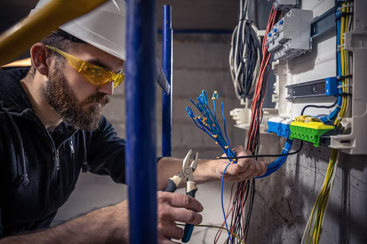
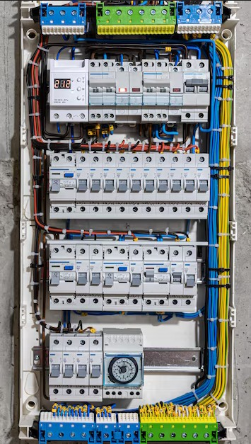
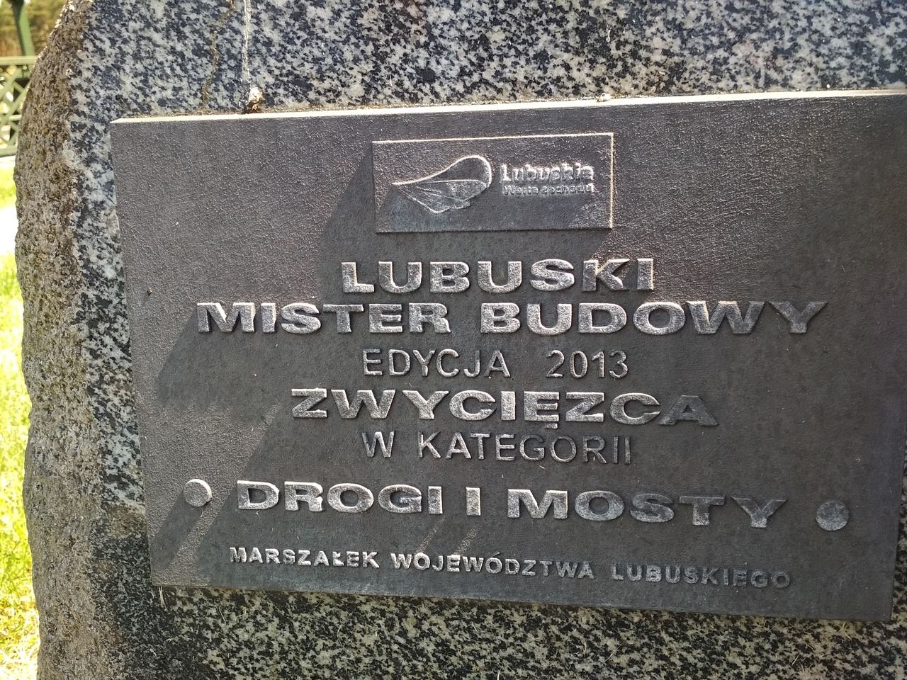

Mobilny zespół do napraw automatyki i elektryki w przedsiębiorstwach.
| |
|
- diagnozy i wyceny usterek elektrycznych
- naprawy instalacji do napięcia 400V
- wymiany urządzeń elektrycznych do mocy 2kW
- modernizacje automatyki przemysłowej
- elektroniczne alarmy (przeciwzalaniowe i inne)
- murowanie, tynkowanie, akrobacje
- darmowe diagnozy i wyceny
- i tak dalej
- i tak dalej
- i tak dalej
|
|
|

|

|
Nasze motto brzmi: ,,Każdy z czegoś żyje, my żyjemy z usług najwyższej jakości". Jesteśmy prężnie rozwijającym się zespołem złożonym z specjalistów: automatyków, elektroników, mechatroników. Do stałych Klientów dojeżdżamy w tym samym lub następnym dniu od zgłoszenia awarii. Każdy z pracowników Domeracki & Sons posiada doświadczenie oraz dyplomy z licznych gałęzi techniki: automatyki, elektroniki, mechatroniki, systemów alarmowych. Usługi pełnimy głównie na terenie całego powiatu koszalińskiego, a na specjalne życzenie Klienta jesteśmy zdolni wyjechać dalej w województwo zachodniopomorskie.
